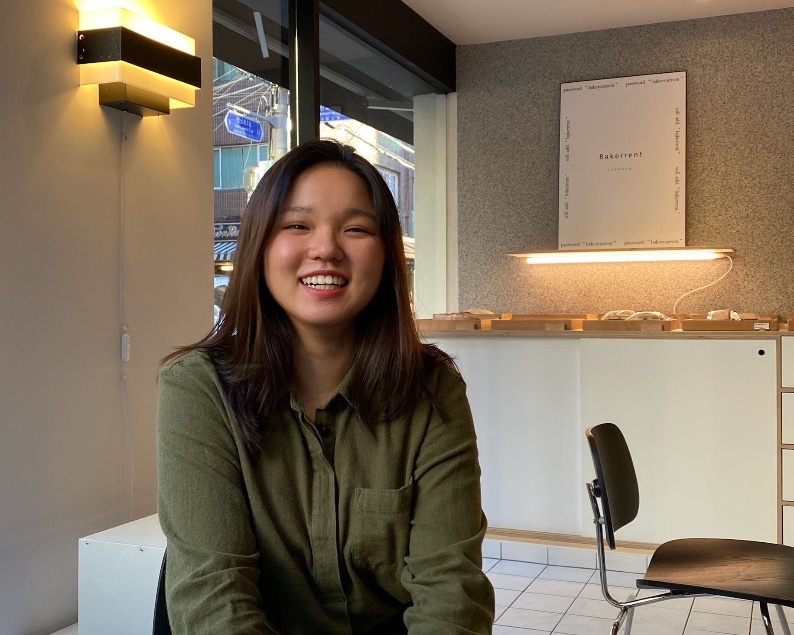

About Us

 |
 | |
| Haris Bhatti | Yeonji Kim | |
|---|---|---|
|
Major: Advertising Email: haris.bhatti@utexas.edu Haris is a senior the same school as everyone else on this list; UT. His interests lie heavily in AR and VR technologies, skateboarding, and making semi-humorous videos for his friends. Amount of commits:
|
Major: Psychology Email: lindsay_0421@utexas.edu Yeonji is a senior at UT. Interests include human cognition and artificial intelligence, travel, and volleyball. Amount of commits:
|
|
| Fran Aguilar Lite | Gavin Wurm | |
|
Major: Audiovisual Systems Engineering Email: fran.utexas.edu Universitat de Pompeu Fabra Senior, currently living in Austin as an exchange student for the University of Texas. Interests on Augmented Reality and possible applications. Amount of commits:
|
Major: Asian Studies Email: gavinwurm@utexas.edu Gavin is a third year student at UT. Interests include language learning/acquisition and reading. Amount of commits:
|